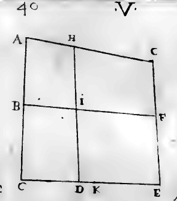

Proposition IV: Proportionally Divided Quadrilateral¶


Proposition IV · Theorem IV (p. 40, Tab. 5, Fig. 40)
If in a quadrilateral two lines cutting one another be drawn, each of which divides two opposite sides in the same ratio, the resulting figure will be the fifth element.
Let there be quadrilateral ACEG, and let CB be to BA as EF to FG, and likewise ED to DC as GH to HA, and let lines BF, HD be joined, cutting one another at I. I say that this figure is that which we considered in the fifth element. For if this be not true, the ratio ED to DC will not be that which is compounded of the ratios AB to BC, GH to HA, and EF to FG. Let there be therefore another ratio EK to KC. And so, since EK to KC is compounded of the aforesaid ratios, or rather of the same AB to BC, EF to FG, and GH to HA taken in perturbed order; nay even of the ratios AB to BC, CB to BA, and GH to HA; or finally of the ratios AB to BA, and GH to HA; or of GH to HG to HA; EK will be to KC as GH to HA: but ED to DC is also in the same ratio; therefore as EK to KC, so ED to DC, and by composition, EC to CK will be as the same EC to CD; therefore CK is equal to CD, the whole to a part, which is absurd, which &c.